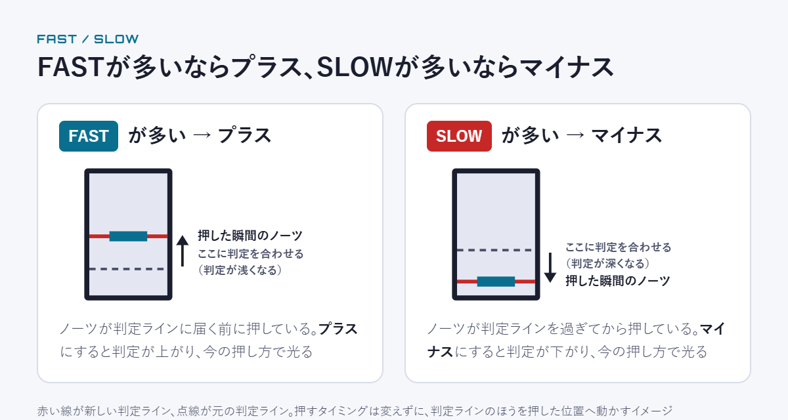

📑 文章目录（15 节）
本文将讲解 IIDX（beatmania IIDX）的判定时机调整做法，以及 FAST 或 SLOW 偏多时应该往哪个方向、调整多少。
文章后半部分也会介绍笔者平时调判定时常会留意的几个心得。
- FAST 偏多往正数（+）调，SLOW 偏多往负数（-）调
- 调整幅度：明显偏向一方时调大一点，之后每次微调 0.1〜0.2
- 用不用刻意打也能 Full Combo 的简单曲子来调；比起节奏感（耳朵），更要靠视觉判定线对齐（眼睛）
- 找到“就是这里”的位置后，不要根据当天状态或曲目乱改，剩下的交给身体去适应判定
什么是判定时机调整
判定时机调整是用来修正“音符视觉上与判定线重合的时刻”和“实际判定时刻”之间偏差的设置，主要用于抵消屏幕显示延迟以及不同机台之间的个体差异。
数值可以以 0.05 为步进调整（自 27 代 HEROIC VERSE 起，由原本的 0.1 步进变得更精细）。
往正数（+）调会让判定变浅（偏判定线上方），往负数（-）调会让判定变深（偏判定线下方）。
与绿数字的区别
经常一起被提及的绿数字控制的是音符出现到抵达判定线的时间，也就是视觉流速的设置；而判定时机调整控制的是在哪个瞬间按下才能发光（P-GREAT），二者职责不同。
不过，把判定调深后，看到音符到按下之间的反应余量会稍微增加一点。因此也有不少玩家会在压低绿数字的同时，把判定调得偏深一些。绿数字与判定位置的搭配在下面这篇文章中有更详细的讲解。
FAST・SLOW 偏多时该往哪边调？
FAST 表示按早了，SLOW 表示按晚了。当明显偏向其中一方时，按如下方向调整：
| 结算情况 | 调整方向 | 判定位置变化 |
|---|---|---|
| FAST 偏多 | 正数（+） | 变浅（偏判定线上方） |
| SLOW 偏多 | 负数（-） | 变深（偏判定线下方） |

FAST 偏多说明你在音符抵达判定线之前就按下了，把判定调浅就能让你当前的按键时机发光；SLOW 则相反。官方说明中也指出，若显示器存在画面延迟（因显示偏慢而容易出 SLOW），应往负数方向调整。
应该调多少？
当 FAST 与 SLOW 数量明显一边倒时，先大幅调一下再打一局。之后每当你感觉“刚才绝对是正点按的，却出了 FAST（或 SLOW）”时，再每次按 0.1〜0.2 微调。
另外，部分顶尖玩家会把判定调深到 -2〜-3 左右。这并非为了修正偏差，而是为了增加按键反应余量而刻意调深的设定。
判定调整的做法
- 选一首简单的曲子
选择不用刻意打也能 Full Combo 的难度、且音符数不算太少的曲子。原因见下文心得。
- 看着视觉判定线按下
用眼睛追音符，在音符与判定线重合的瞬间按下。重点是按视觉画面对齐，而不是跟着音乐听音踩点。
- 看结算的 FAST・SLOW 进行调整
FAST 多就加（+），SLOW 多就减（-）。明显偏向就多调一点，轻微偏向就每次调 0.1〜0.2。
- 定下来之后就固定
找到“就是这里”的位置之后，就不要再改动了。下次玩同一台机台时，直接从这个数值开始。
从 CastHour（29 代）开始，游玩中途也可以直接调整判定了：按小键盘的 9 调高判定位置（+），按 3 调低（-）。不用退出重选曲目就能实时测试，找偏差省事得多。
调判定时的 5 个心得
比起耳朵（节奏感），用眼睛对齐
坦白说，节奏感其实没那么靠谱。请专注于让视觉上的判定线与实际判定时机保持一致。
用有一定音符数的简单曲子来调
偶尔会看到有人用明显偏难的曲子调判定。推荐选不用刻意打也能 Full Combo 的曲子，这样注意力不会被“接住音符”牵走，可以专心打发光。
一旦精力被“怕漏键”牵走，视线就会一点点上移，导致 FAST 增多；你看到 FAST 多了又去调判定，判定越调越浅，回头打单发/低密度曲子时又全是 SLOW……就此陷入恶性循环。
之所以要选有一定音符数的曲子，是因为视线不会压得过低，FAST・SLOW 的比例也更容易趋于稳定；音符数太少的话比例容易大幅波动。
FAST・SLOW 的比例仅供参考
如上所述，只要注意力稍微被“接音符”牵走，通常就会偏向 FAST。只看 FAST・SLOW 的比例乱调反而会越调越偏。
只在明显一边倒时大幅调整，其余时候相信自己“明明正点按的却偏了”的感觉，一点点微调即可。
找到位置后，专心让身体去适应
过于执着调判定很容易掉进死胡同。反复找判定的期间，你也无法专心做提升地力的练习。
找到“就是这里”的位置后，停止折腾判定、转而让自己的身体主动去契合判定，才更有利于进步。
不要根据当天状态或曲目乱改
判定调整原本是为了适配机台的功能，但有些人会根据当天手感或每首歌的 FAST・SLOW 每次都改。老实说，我非常不推荐这么做。
在同一台机台上频繁改判定，会很难培养出抓准判定核心的能力。找到这台机台的最佳位置后，尽量固定不变，改用微调绿数字或视线高度来让身体适应判定吧。
调了判定依然偏时的原因
动了判定后 FAST 或 SLOW 的偏向依然没有改善时，原因往往在判定之外。
| 遇到这种情况 | 可能原因 | 建议尝试 |
|---|---|---|
| 只有难曲 FAST 变多 | 注意力被“接音符”牵走，视线抬高了 | 不要动判定，以简单曲定下的值为基准 |
| 明明看清了却总是 SLOW | 流速太快，手指跟不上 | 调大绿数字，或把判定稍微调深一点 |
| 不同曲子 FAST 和 SLOW 来回变 | 按曲子乱调判定，没有固定基准 | 调回用简单曲定下的值并固定 |
| 只有在家玩偏差很大 | 显示器或电视画面有延迟 | 开启游戏模式等低延迟设置 |
疲劳或犯困时按键时机也很容易乱。这种日子若乱改判定会把基准改歪，请保持原样不要动。
如果是声音本身存在延迟，请先尝试下面文章里的修复方法。
判定时机自动调整可以用吗？
从 CastHour（29 代）开始，也可以使用能在游玩中自动校准判定的“判定时机自动调整”功能。可在详细选项中设置，游玩中按小键盘 0 即可开关。
不用花好几币就能校准很方便，但如果一直开着，判定会跟着每次发挥实时变化；打完不擅长的高难曲或变速剧烈的曲子后，数值甚至会变成很奇怪的值。
正如心得 5 所述，判定频繁变动会阻碍你练出抓判定核心的能力。如果要用，建议只在开头几首简单曲时打开来定个值，之后就关闭。
判定调整常见问题
FAST 偏多时判定应该调正数还是负数？
往正数（+）调。调正会让判定变浅，让你当前的按键时机更容易发光；SLOW 偏多时则往负数（-）调。不过如果只是难曲 FAST 多，可能不是判定问题，而是视线抬高了。
判定调整应该调多少？
明显偏向时先调大一点，之后每次按 0.1〜0.2 微调。
应该按曲子或者每次打都改判定吗？
不推荐。判定来回变会让你练不出抓判定核心的能力。同一台机台，用简单曲定好值后固定下来，让身体去适应它。
判定时机自动调整可以一直开着吗？
不推荐。一直开着会导致判定随发挥漂移，打完难曲或变速曲后可能跑偏。用简单曲定好值后关掉并固定会更稳定。
总结
判定时机调整的原则是：FAST 多加（+），SLOW 多减（-）。选不用刻意打也能 FC 的简单曲盯着判定线目押，明显偏就大调，随后每次按 0.1〜0.2 微调。
最重要的是定好之后就不要再改。比起反复找判定，把时间花在让身体去契合判定上更有意义。
💬 读者评论与作者答疑（2 组对话）